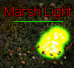
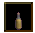
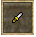
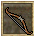
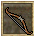
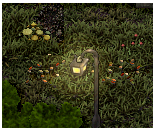

Valinor
Quest NPCS
VWC
Valinor Welcoming Committee
VWC are the only guild on Valinor, that has been picked by Ashen Empires GMs and Developers to help out new players. If you have any problems on the island, do not hesitate to contact them! They all hang out in the help channel.
Quest
Welcome To Ashen Empires
| Difficulty | Skills |
|---|---|
| Apprentice | Combat |
| NPC Quest Start | Monster | Reward |
|---|---|---|
| Duke Randolf |
Bats (lvl 1) Snakes (lvl 2) |
 ">
">


 ">
">
|
 Duke Randolf welcomes you to the Island of Valinor. He explains to you that they have been under siege by all forms of evil. He needs all able-bodies to help defend the city,
but you are quite ill-prepared to face the dangers that lie ahead.
Duke Randolf welcomes you to the Island of Valinor. He explains to you that they have been under siege by all forms of evil. He needs all able-bodies to help defend the city,
but you are quite ill-prepared to face the dangers that lie ahead.
- 5 Hardtacks
- 2 Torches
- 225 Experience Pool experience may very
QUEST RECEIVED: Welcome to Ashen Empires, Speak to Lord Trembley on the shores of Valinor.
Speak to Lord Trembley. He is surprised that you are alive being washed ashore. He explains about how to open your Equipment screen by pressing E on your keyboard. You can examine yourself and assign your orbs in strength, Dexterity, Intelligence or Constitution. He asks what type of person you are; Warrior, Crafter or Mage Your choice will determin the cothing you are giving.
- Tunic of the Island Guard (Warrior)
- Smock of the Island Guard (Crafter)
- Robe of the Island Guard (Mage)
- Pants
- Sextant
- 1,125 Experience Pool experience may very
After chosing your profession he ask you to go speak to Sage Haritod
QUEST UPDATE: Welcome to Ashen Empires, Speak to Sage Haritod.
 Speak to Sage Haritod. He explains how to open your quest log by pressing L on your keyboard.
Sage Haritod has many options to explan the game to you. You can continue though many of his dilogue or continue on.
He tells you to speak to one of the Weapon, Magic, or Tradeskill trainers to receive your next task. The weapon trainers
are to the right, magic trainers are down the stairs and tradeskill trainers are to the left and found around the city.
Speak to Sage Haritod. He explains how to open your quest log by pressing L on your keyboard.
Sage Haritod has many options to explan the game to you. You can continue though many of his dilogue or continue on.
He tells you to speak to one of the Weapon, Magic, or Tradeskill trainers to receive your next task. The weapon trainers
are to the right, magic trainers are down the stairs and tradeskill trainers are to the left and found around the city.
- 450 Experience Pool experience may very
QUEST UPDATE: Welcome to Ashen Empires, Speak to Weapon, Magic or Tradeskill Trainer.
Once you speak to one of the trainers you will begin a new Quest route for that trainer. You will also recieve the next quest in the Welcome to Ashen Empires quest.
QUEST UPDATE: Welcome to Ashen Empires, Speak to the Captain of the Guard.
 Speak to the Captain of the Guard and he will give you a sack to carry your supplies.
Speak to the Captain of the Guard and he will give you a sack to carry your supplies.
- Large Knapsack
- 450 Experience Pool experience may very
He will tell you of a problem outside the walls. The bat and snake population has gotten out of control. He want's you to slay 25 of these vermin to keep them in check.
QUEST UPDATE: Welcome to Ashen Empires, Keep the vermin in check - kill 25 bats or snakes.

 Head outside the walls and kill 25 bats or snakes. The quest will keep track of your kills in your chat window and your quest log. Once you kill the 25th vermin you will receve a quest update.
Head outside the walls and kill 25 bats or snakes. The quest will keep track of your kills in your chat window and your quest log. Once you kill the 25th vermin you will receve a quest update.
QUEST UPDATE: You have rid the land of 25 foul vermin for the Captain of the Guard!
QUEST UPDATE: Welcome to Ashen Empires, Report back to the captain of the Guard.
Return to the Captain of the Guard for your reward.
- Boots of the Island Guard
- 450 Experience Pool experience may very
Retrun to him if you would like another task.
QUEST COMPLETE
Kumba's Pendant
| Difficulty | Skills |
|---|---|
| Apprentice | Combat |
| NPC Quest Start | Monster | Reward |
|---|---|---|
| Kumba Northern | Spider (lvl 3) |

|
Kumba Northern was out looking for a suitable place to plant his crops when he dropped his pendant,
before he could reach down to pick it up, a spider picked it up and ran down a hole.
QUEST RECEIVED: Kumba's Pendant Find Kumba Northern's Pendant. It was taken into a hole by a spider
 Adverture out and kill spiders untill you get an update that you have found the pendant.
Adverture out and kill spiders untill you get an update that you have found the pendant.
QUEST UPDATE: You found Kumba's Pendant! Return to him inside the Valinor Castle.
Speak to Kumba Northern to recieve your reward.
- Moth Riddled Cloak
- 450 Experience Pool experience may very
Quest Complete
Strange Fascination
| Difficulty | Skills | Items |
|---|---|---|
| Apprentice | Combat | Ear of bat 
|
| NPC Quest Start | Monster | Reward |
|---|---|---|
| Mary Locksley | Bat (lvl 1) |

|
Mary Locksley is very fascinated with bat ears. She needs you to bring her 10 of their ears and she will make you a pretty necklace.
QUEST RECEIVED: Strange Fascination, Bring Mary Locksley 10 Ear of bat
Adverture out and kill bats untill you get an update that you have collected enough Ear of Bat.
QUEST UPDATE: You have collected enough Ear of Bat to complete the quest. (10/10)
Speak to Mary Locksley to recieve your reward.
- Bat Ear Necklace
- 450 Experience Pool experience may very
Quest Complete
The Necklace
| Difficulty | Skills | Items |
|---|---|---|
| Apprentice | Combat | Triddle Shell  |
| NPC Quest Start | Monster | Reward |
|---|---|---|
| Douglas Logan | Triddle (lvl 1) | "> |
Douglas Logan is looking for someone to gather 10 triddle shells to make a necklace for this lovely lady.
QUEST RECEIVED: The Necklace, You met Douglas Logan in the Valinor Cellar, who asked you to get 10 Triddle Shells.
Adverture out and kill triddles untill you get an update that you have collected enough triddle shells.
QUEST UPDATE: You have collected enough Triddle Shell to complete the quest. (10/10)
Speak to Douglas Logan to recieve your reward.
- Triddle Shell Armor
- 900 Experience Pool experience may very
Quest Complete
Our Little Spider Problem
| Difficulty | Skills |
|---|---|
| Apprentice | Combat |
| NPC Quest Start | Monster | Reward |
|---|---|---|
| Serina Wilcut | Dredge Spiders (lvl 2) | 100 Gold |
 Serina Wilcut is needing your help keeping the lower cellars free of spiders for her husband. He was called into service to fight the new goblin menace.
She is dreading that someone will soon come take his job out from under him. She needs you to slay 10 dredge spiders and pay you his monthly salary.
Serina Wilcut is needing your help keeping the lower cellars free of spiders for her husband. He was called into service to fight the new goblin menace.
She is dreading that someone will soon come take his job out from under him. She needs you to slay 10 dredge spiders and pay you his monthly salary.
QUEST RECEIVED: Our Little spider Problem, Kill 10 Dredge Spiders in valinor cellar.
 Adverture downstairs and slay dredge spiders untill you get an update that you have killed enough
Adverture downstairs and slay dredge spiders untill you get an update that you have killed enough
QUEST UPDATE: Our Little Spider Problem 10 Dredge Spiders killed. return to Serina for your reward.
Speak to Serina Wilcut for your reward.
- 100 Gold
- 562 Experience Pool experience may very
Quest Complete
The Ring
| Difficulty | Skills |
|---|---|
| Apprentice | None |
| NPC Quest Start | Reward |
|---|---|
| Shady Looking Man |

|
The Shady Looking Man is in a bind and needs your help. His grandmother's ring was stolen from him and needs you to get it back for him for sentimental reasons.
The Eastern Gate Guards has recovered it from the thief, and placed it inside the evidence locker. If you could recover it, his old Auntie would be very thankful.
QUEST RECEIVED: The Ring, You agreed to help the shad looking man recover the stolen ring from the Eastern Gate Guard house.
 Head over to the Eastern Gate and serach the evidence locker. Searching the evidence locker cause the Eastern Gate Lieutenant to speak. He can't let just anyone have that ring. He needs a signed receipt for it.
They are holding the stolen ring for Sarah Bent. You'll need to talk to her and have her sign for the item before it can be released.
Head over to the Eastern Gate and serach the evidence locker. Searching the evidence locker cause the Eastern Gate Lieutenant to speak. He can't let just anyone have that ring. He needs a signed receipt for it.
They are holding the stolen ring for Sarah Bent. You'll need to talk to her and have her sign for the item before it can be released.
QUEST UPDATE: The Ring, The Eastern Gate Lieutenant needs a signed receipt from Sarah Bent.
 Find Sarah Bent in the Alchimist shop in Valinor Castle. She will be excited that her ring has been found and will sign the receipt for it.
Find Sarah Bent in the Alchimist shop in Valinor Castle. She will be excited that her ring has been found and will sign the receipt for it.
- 175 Experience Pool experience may very
QUEST UPDATE: The Ring, Retrieve Sarah's lost ring from the evidence locker.
Talk to the Eastern Gate Lieutenant, he will agree to let you take the ring from the evidence locker.
You begin searching the evidence locker...
ITEM: RECEIVED: Dull Emerald Ring

He trusts you will return the ring to its proper owner.
QUEST UPDATE: The Ring, Return the ring to its rightful owner.
- OPTION: 1 Give the ring to the Shady Looking Man
- OPTION: 2 Give the ring to the Sarah Bent
OPTION: 1
Shandy looking Man: Ah! the ring! I've been searching for that for months. My dear, sweet mum will be so happy that I've found it. Speak to him again he will say he made quite a fortune by selling it... Uhh... I mean, my wife was very happy to have it back...
- 25 Gold
- 700 Experience Pool experience may very
OPTION: 2
Sarah Bent: You found my ring! I am so happy. Please hand it to me. I have a small reward for you. She is very happy you found her Engagement Ring.
- 50 Gold
- Sarah's Promise Ring
- 900 Experience Pool experience may very
You returned the ring to Sarah Bent and were rewarded with Sarah's Promise Ring.
Quest Complete
Proof
| Difficulty | Skills |
|---|---|
| Apprentice | Combat |
| NPC Quest Start | Monster | Reward |
|---|---|---|
| Paula Duncan |
Goblin Runt (lvl 3) Goblin Worker (lvl 4) Goblin Shaman Runt (lvl 5) |

|
Paula Duncan Has never seen goblins in her life. She says to you if they do exist then bring her a goblin scalp to prove it.
QUEST RECEIVED: Proof, Bring a goblin scalp to Paula Duncan to prove to her that goblins are real..


Adverture south west near the coast to find goblins. You can kill either the Goblin Runt, Goblin Worker, or the Goblin Shaman. As you kill them you will receive a message each time you do not scalp a goblin.
You attempt to scalp the goblin, but botch the job horrifically...
When you succeed at scalping the goblin you will recieved a new quest update.
QUEST UPDATE: Proof, You collected a Goblin Scalp! Bring it to Paula Duncan.
Paula Duncan is amazed that goblins do exist. She rewards you with an item she found in her well.
- Totem of the Wolf Pup
- 1200 Experience Pool experience may very
Quest Complete
Frump the Cook
| Difficulty | Skills |
|---|---|
| Apprentice | Combat |
| NPC Quest Start | Monster | Reward |
|---|---|---|
| Imeral Lagost | Frump the Cook (lvl 7) |

|
 Imeral Lagost Has a bit of a problem. A goblin by the name of Frump the Cook has stolen some of his special ingredients for a pie
that he is to make for Lord Trembley. He has finally traced down the scamp. He is somewhere down in this dungeon. He wants you to slay him. He suggest you bring
help to defeat him.
Imeral Lagost Has a bit of a problem. A goblin by the name of Frump the Cook has stolen some of his special ingredients for a pie
that he is to make for Lord Trembley. He has finally traced down the scamp. He is somewhere down in this dungeon. He wants you to slay him. He suggest you bring
help to defeat him.
QUEST RECEIVED: Frump the Cook, Find and kill Frump the Cook for Imeral Lagost.

 Frump is loacated at the south east part of this dungeon. You can see the X on the map. You will encounter all types of goblins on the way there. Goblin Runts,
Goblin Shaman Runts, Young Hobgoblins. Once you defeat Frump you will be updated with the next part of the quest.
Frump is loacated at the south east part of this dungeon. You can see the X on the map. You will encounter all types of goblins on the way there. Goblin Runts,
Goblin Shaman Runts, Young Hobgoblins. Once you defeat Frump you will be updated with the next part of the quest.
QUEST UPDATE: Frump the Cook, Return the pie ingredients to Imeral Lagost.
Imeral Lagost Is amazed you took down Frump the Cook. He rewards you with an amulet he found in Frump's empty slop bucket.
- Frump's Amulet
- 5,250 Experience Pool experience may very
Quest Complete
Cloaks to Die For
| Difficulty | Skills |
|---|---|
| Apprentice | Combat |
| NPC Quest Start | Monster | Reward |
|---|---|---|
| Lorlee Eclain | Rancid Zombie (lvl 7) | "> |
 Lorlee Eclain makes exquisite clothing from very unusual materials. She is making cloaks for the nobles in Silvest from Zombie Skins.
If you could collect the skins for her that would be simply fabulous! She is not fit for adventuring lifestyle.
Lorlee Eclain makes exquisite clothing from very unusual materials. She is making cloaks for the nobles in Silvest from Zombie Skins.
If you could collect the skins for her that would be simply fabulous! She is not fit for adventuring lifestyle.
QUEST RECEIVED: Cloaks To Die For, Bring Lorlee Eclain of Valinor 10 Zombie Skins.
 Adventure to west and kill Rancid Zombie and collect 10 Zombie Skins.
Adventure to west and kill Rancid Zombie and collect 10 Zombie Skins.
QUEST UPDATE: You have collected enough Zombie Skin to complete the quest.
Return to Lorlee Eclain she will have a sample of her work for you to try. It should help you in your defense from the undead, even though
the color still needs some work.
- Zombie Skin Cloak
- 2,625 Experience Pool experience may very
You received a Zombie Skin Cloak in exchange for the Zombie Skins.
Quest Complete
War
| Difficulty | Skills |
|---|---|
| Apprentice | Combat |
| NPC Quest Start | Monster | Reward |
|---|---|---|
| Captain of the Guard |
Goblin Runt (lvl 3) Small Skeleton (lvl ) BoneSnarl (lvl ) |
"> |
Capatain of the Guard is in urgent need of a report on the condition of the Southern Guard Post. He has not heard from the Guard in command in quite some time.
Venture south along the road to the Southern Guard post and speak to Guard Calaway.
QUEST RECEIVED: War, Report to Guard Calaway at the Southern Guard Outpost.
Speak to Guard Calaway he will say they are find here, but is worried about the regiment he sent to defend the bridge to the south.
venture south and check on his men there. Get a full report from Sergeant Dawson.
QUEST UPDATE: War, Get Sergeant Dawson's report from the South Bridge.
- 300 Experience Pool experience may very
Speak to Sergeant Dawson for his report. He says the goblins descended on them and killed all his men. You must tell the
Captain back in the city to send reinforcements.
QUEST UPDATE: War, Report the goblin attack to the Captain of the Guard.
Speak to Captain of the Guard inform him of the attack on the southern bridge. He has no men to send to help.
We can't leave the city undefended. He ask you to exact revenge on the foul horde. He ask you to kill goblins untill you obtain the title of Novice Killer of Goblins
QUEST UPDATE: War, Kill 25 Goblins to become a Novice Killer of Goblins.
- 600 Experience Pool experience may very
Cross the south bridge and kill 25 goblins untill you become Novice Killer of Goblins.
You have proven yourself against the Goblins, Speak with the Captain of the Guard.
The Captain of the Guard will inform you that he has finally gotten some reinforcements to take care of this goblin problem once and for all.
Report to duty with Guard Calaway at the Southern Guard Post to help with the elimination of the goblins.
QUEST UPDATE: War, Report to Guard Calaway at the Southern Guard Post.
Report to Guard Calaway to begin the raid on the goblins to the south. This will be some heavy action, take this helm.
- Helm of the Island Guard


Guard Calaway will say CHARGE and a group of Island Guards will spawn and move to the south. At the bridge there will be a group of Goblin Runts heading north to clash with the Island Guards. After the battle there is not an update to go tell the Captain of the Guard. Needs to be an update (QUEST UPDATE: War, Report to the Captain of the Guard after the raid on the goblins. )
The Captain of the Guard will congratulate you with the job well done. Now that you have proven yourself to be a competent warrior,
he could use your help in other parts of the island. He has reports that the Eastern Gate has come uner attack. Report there and help with the situation.
QUEST UPDATE: War, Report to the guards at the Eastern Gate.
Speak to Eastern Gate Lieutenant. He will see if you measure up to the task. He has reports of the dead rissing from the grave to haunt
the lands to the east and south. Investigate this plague on the land.
QUEST UPDATE: War, Prove yourself to the Eastern Gate Lieutenant. Kill 25 undead to become novice killer of the undead.


Head though the eastern gate and kill the undead in the area till you receive the message that you are
Novice Killer of the Undead
QUEST UPDATE: War, You have proven yourself against the Undead. Return to the Eastern Gate Lieutenant!.
Speak to Eastern Gate Lieutenant. He agrees the Captain was right about you. You might just be the person he is looking for after all. The leader of the undead
menace is a skeleton named BoneSnarl. Find Bonesnarl's lair and defeat him. Ater we will celebrate.
QUEST UPDATE: War, You have proven yourself against the Undead. Find Bonesnarl's Lair and defeat him.
- 3,937 Experience pool experience may very
 BoneSnarl's lair is southeast from the gate. Around the mountain back to the northwest. Follow the mountains north edge to the west till you get to some ruins.
Go down the stairs to enter BoneSnarl's lair. This is a two story dungeon. The first area is a strait forward patch, but you can get turned around and go in a circle.
The next level can be a bit more complicated. See the maps above to navigate this dungeon. There are many undead you will need to fight all the way to BoneSnarl.
This will be the one of the hardest fights you will have on this island. It is recommended you bring help.
BoneSnarl's lair is southeast from the gate. Around the mountain back to the northwest. Follow the mountains north edge to the west till you get to some ruins.
Go down the stairs to enter BoneSnarl's lair. This is a two story dungeon. The first area is a strait forward patch, but you can get turned around and go in a circle.
The next level can be a bit more complicated. See the maps above to navigate this dungeon. There are many undead you will need to fight all the way to BoneSnarl.
This will be the one of the hardest fights you will have on this island. It is recommended you bring help.
QUEST UPDATE: War, You defeated Bonesnarl! Return the Eastern Gate Lieutenant.
Speak to Eastern Gate Lieutenant. You took down BoneSnarl! Jolly good, that wretch was causing us all sorts of problems! Report back to the Captain of the Guard I think you have accomplished all that you can here.
- 5,250 Experience pool experience may very
Speak to Captain of the Guard. Good to hear that BoneSnarl has been dealt with! He suggest that it is time for you to leave the island to adventure on the mainland. To leave the island simply walk onto the magic transporter located inside the city temple.
- ? Experience pool experience may very
The captain of the Guard wishes you well in your adventures.
Quest Complete
Curtis's Secret
| Difficulty | Item |
|---|---|
| Apprentice | Full Milk Bottle |
| NPC Quest Start | Reward |
|---|---|
| Curtis Leabu |
Old Worn Pack 
|
Curtis Leabu has a secret but he wont tell you untill you give him a bottle of milk.
QUEST RECEIVED: Curtis's Secret, Bring 1 bottle of milk to Curtis Leabu.
 Head back into the castle to the Provisioner Shop Speak to Whiliam Rosen to purchase an Empty Milk Bottle.
Once you have the Empty Milk Bottle head out the west gate to Valinor Grazing Area and find a dairy cow.
Click on the dairy cow then on the Empty Milk Bottle to fill it with milk. Return to Curtis Leabu.
When you speak to Curtis Leabu he will ask you to give him the bottle of milk
and he will tell you the secret. Drag and drop the Full Bottle of Milk on to Curtis Leabu
Head back into the castle to the Provisioner Shop Speak to Whiliam Rosen to purchase an Empty Milk Bottle.
Once you have the Empty Milk Bottle head out the west gate to Valinor Grazing Area and find a dairy cow.
Click on the dairy cow then on the Empty Milk Bottle to fill it with milk. Return to Curtis Leabu.
When you speak to Curtis Leabu he will ask you to give him the bottle of milk
and he will tell you the secret. Drag and drop the Full Bottle of Milk on to Curtis Leabu
QUEST UPDATE: Curtis's Secret, Check under a strange rock near the north wall of Valinor
- 350 Experience Pool experience may very
 After you give him his milk he will tell you of an old man putting something under a strange rock.
Just north of Curtis Leabu next to the north wall you will find a strange rock,
click on the strange rock to receive your reward.
After you give him his milk he will tell you of an old man putting something under a strange rock.
Just north of Curtis Leabu next to the north wall you will find a strange rock,
click on the strange rock to receive your reward.
- Old Worn Pack
- 525 Experience pool experience may very
You found an Old Worn Pack under the strange rock.
Quest Complete
Strange Request
| Difficulty | Skills | Item |
|---|---|---|
| Apprentice | Combat |  |
| NPC Quest Start | Monster | Reward |
|---|---|---|
| A Strange Looking Man | Marsh Light (lvl 8) |

|
Speak to A Strange Looking Man He ask if Duke Randolf sent you to look for him. Ask him if the hunting is good.
He says he not here to hunt but if your interested you can help. He is in need of 15 Strange Dust from the Marsh Lights, but the swamps of been over ran by a large number of undead.
He will pay very handsomely for them.
QUEST RECEIVED: Strange Request, Bring the strange looking man 15 Strange Dusts

Head south to the swamp and kill Marsh Lights untill you have collected 15 Strange Dust.
QUEST UPDATE: You have collected enough Strange Dust to complete the quest.
Return to A Strange Looking Man to receve your reward. He will ask if you have the Strange Dust he requested.
- Marsh Soaked Boots
- 3,937 Experience pool experience may very
Quest Complete
Davey's Rattle
| Difficulty | Skills |
|---|---|
| Apprentice | Combat |
| NPC Quest Start | Monster | Reward |
|---|---|---|
| Davey Logan | Snakes (lvl 2) | "> |
 Speak to Davey Logan, he is crying about a lost rattle.
His dad killed a snake for that rattle. He ask you to go kill a snake to get him a new rattle.
Speak to Davey Logan, he is crying about a lost rattle.
His dad killed a snake for that rattle. He ask you to go kill a snake to get him a new rattle.
QUEST RECEIVED: Davey's Rattle, Kill snakes to find a new rattle for Davey Logan
South out side of the walls you will find snakes. Kill them untill you get an update.
QUEST UPDATE: You found a rattle for Davey Logan
QUEST UPDATE: Davey's Rattle, You found a rattle for Davey Logan!
Return to Davey Logan, he is excited you have found his rattle. He found a pair of pants when his Aunt Nessie came to visit. He give them to you as a reward since they are no fun to play with.
- Spider Silk Leggins
- 450 Experience pool experience may very
Quest Complete
A Goblin Problem
| Difficulty | Skills |
|---|---|
| Apprentice | None |
| NPC Quest Start | Reward |
|---|---|
| Timothy Jager |

|
 Speak to Timothy Jager, He has a bit of a problem.
Supplies intended for the southern outpost have gone unaccounted for. There have been a bit of a 'Goblin Problem'
in the area. He wants you to locate and return the supplies.
Speak to Timothy Jager, He has a bit of a problem.
Supplies intended for the southern outpost have gone unaccounted for. There have been a bit of a 'Goblin Problem'
in the area. He wants you to locate and return the supplies.
QUEST RECEIVED: A Goblin Problem, Timothy Jager asked you to locate a shipment of supplies sent to the southern outpost.

 The map shows the three locations you will need to find all Shipment Crates. Head out side the walls to the southwest past the southern outpost. At the bridge, in the Southern Passage Guardhouse that in in ruins, is the first Shipment Crate.
The map shows the three locations you will need to find all Shipment Crates. Head out side the walls to the southwest past the southern outpost. At the bridge, in the Southern Passage Guardhouse that in in ruins, is the first Shipment Crate.
QUEST UPDATE: You have located one of the three Shipment Crates for Timothy Jager
Keep following the path south then west to find Shipment Crate 2 wtih in the ruins of Lanore.
QUEST UPDATE: You have located one of the three Shipment Crates for Timothy Jager
Circle around to the west side of the mountain to find Shipment Crate 3.
QUEST UPDATE: You have located the last Shipment Crate for Timothy Jager
Return to Timothy Jager
QUEST UPDATE: A Goblin Problem, Return to Timothy Jager
Return to Timothy Jager, he thanks you for returning the supplies. The town can use these supplies in this time of need. He rewards you with a small amount of gold and a Belt recovered from the supply crates.
- 50 Gold
- Supply Runner's Belt
- 1,050 Experience pool experience may very
You earned a Supply Runner's Belt for returning the Supply Crates to Timothy Jager.
Quest Complete
Hell Hath no Fury
| Difficulty | Skills |
|---|---|
| Apprentice | None |
| NPC Quest Start | Reward |
|---|---|
| A Young Maid |

|
 Speak to A Young Maid, She is a jealous of Sarah Bent for taking her man.
She would give anything for her Promise Ring that he gave her.
Agree to get the Promise Ring.
Speak to A Young Maid, She is a jealous of Sarah Bent for taking her man.
She would give anything for her Promise Ring that he gave her.
Agree to get the Promise Ring.
QUEST RECEIVED: Hell Hath no Fury, Bring Sarah's Promise Ring to the Young Maid in Valinor
You must have completed the quest "The Ring" and chose Option: 2 to receive Sarah's Promise Ring. Once you have the ring bring it to A Young Maid to receive your reward. Drag the ring on to her. She gloats how she will wear it when she goes into Sarah's shop.
- Jealousy Amulet
- 1,050 Experience pool experience may very
Quest Complete
Creatures of Dransik
| Difficulty | Skills |
|---|---|
| Apprentice | Combat |
| NPC Quest Start | Reward |
|---|---|
| Knight Bastrop |
Speak to Knight Bastrop ask you to help King Lotor II Knights to research the foul beasts and wicked ones that roam the lands. King Lotor has created a wondrous enchanted book which counts and records information about the creatures you hunt. He gives you the Hunter's Handbook. PRESS H to open the book. Any creature you have slain will be added to the book. Take this scalpel and use it to study a living creature. Return to him once you have done that.
- Hunter's Handbook
- Scalpel
QUEST RECEIVED: Creatures of Dransik, Use the scalpel to identify a creature for Knight Bastrop in Valinor Castle
Studying the creatures first requires you to kill one first. This will add the first data to the Hunter's Handbook. Once you have the creature added to the book go find the same creature and use
the Scalpel on the living creature to start the IDing process. If you fail you will see You failed to learn anything new about the Creatures Name.
When you do succeed at Iding the creature you will see this message. You have identified the Creatures Name. You will then be updated for the next part of the quest.
QUEST RECEIVED: Creatures of Dransik, You have successfully identified a creature! Return to Knight Bastrop in Valinor Castle.
Knight Bastrop will reward you for your job well done. He will inform you that the Lotorian Knights will help guide you in your studies.
- ??? Experience pool experience may very
You pledge to assist the Lotorian Knights by studying creatures which inhabit the Kingdom
Quest Complete
The Alchemist's Apprentice
| Difficulty | Skills | Items |
|---|---|---|
| Apprentice | Combat | Blue Topaz |
| NPC Quest Start | Monster | Reward |
|---|---|---|
| Alchemist Baki | Triddle (lvl 1) |
| Quest Stages |
|---|
| 1 |
Speak to The Alchemist Baki, he is in need of some gemstones to help with his potion making.
bring him 2 blue topaz, and in return will give you a healing potion in return.
QUEST RECEIVED: The Alchemist's Apprentice, Bring 2 Blue Topaz to Alchemist Baki in Valinor.
This is a very easy task go out side the castle walls and kill Triddles untill you have 2 Blue Topaz, you can buy them if you see them in the store.
QUEST UPDATE: You have collected enougth Gem to complete the quest.
Speak to The Alchemist Baki again to be rewared. He says to bring him more Blue Topaz, if you wish.
- Potion of Minor Healing
Alchemist Baki will continue to accept Blue Topaz in exchange for healing potions.
Quest Complete
Veratti
| Difficulty | Skills | Items |
|---|---|---|
| Apprentice | Combat | Blue Topaz |
| NPC Quest Start | Monster | Reward |
|---|---|---|
| Alchemist Baki | Fire Ant (lvl 8) |  |
| Quest Stages |
|---|
| 1 |
 Speak to Veratti, he ask you to go north past the bridge and then along the lake to the Fire Ant mounds. He ask you to bring back 10 of their legs for his mixtures
This potion will help you in your struggles against the numerous undead that haunt the area.
Speak to Veratti, he ask you to go north past the bridge and then along the lake to the Fire Ant mounds. He ask you to bring back 10 of their legs for his mixtures
This potion will help you in your struggles against the numerous undead that haunt the area.
QUEST RECEIVED: Veratti, Bring 10 Ant Legs to Veratti stationed at an outpost sourth of Valinor Island swamp.
This task can be a hard one; The Fire Ants  are lvl 8 and always attack in a group if not carefull you can be over ran by them. Kill them untill you have 10 Ant Legs, then return to Veratti for your reward.
are lvl 8 and always attack in a group if not carefull you can be over ran by them. Kill them untill you have 10 Ant Legs, then return to Veratti for your reward.
QUEST UPDATE: You have collected enougth Ant Leg to complete the quest.
Speak to Veratti again to be rewared. He say to bring another 10 ant legs; he will provide you with antoher potion.
- Undead Cocktail
Quest Complete
Ancient Magic
| Difficulty | Skills | Items |
|---|---|---|
| Apprentice | Combat | Skeletal Skull |
| NPC Quest Start | Monster | Reward |
|---|---|---|
| Crazy Hermit | Skeletal Apprentice (lvl 8) |

|
| Quest Stages |
|---|
| 1 |
Speak to theCrazy Hermit, he is studying magic and needs your help. Bring back 10 skulls of Skeletal Apprentice to help with his research.
He has paid a steep price to study this ancient magic. They feared it would attract the undead, and forbabe him to practice in the castle.
QUEST RECEIVED: Ancient Magic, Bring 10 Skeletal Skulls from Skeletal Apprentices to the Crazy Hermit.
Head south from the Crazy Hermits location untill you find some Skeletal Apprentices and kill them. They will drops skeletal skulls 100% of the time. When you have collected 10 you will be updated.
Return to the Crazy Hermit for your reward.
QUEST UPDATE: You have collected enougth Skeletal Skull to complete the quest.
Speak to the Crazy Hermit again to be rewared with an option between Rune of Mind, Rune of Body, Rune of Soul, or Rune of Nature. Bring him more skulls to be rewarded again.
- Magic Rune Chose
- 1,320 Experience pool experience may very
Quest Complete
Weapon Trainers
Large Blades
| Difficulty | Skills |
|---|---|
| Apprentice | Combat |
| NPC Quest Start | Reward |
|---|---|
| Large Blade Trainer |
 ">
">
">
">

|
Speak to Large Blades Trainer, He will give you a Dull Edged Sword to complete the task to gain experience by slaying beasts and foul creatures, then return to be rewarded.
- Dull Edged Sword
QUEST RECEIVED: Weapons Training - Large Blades, Venture forth and gain experience with your sword.
- First task Gain 500 exp in Large Blades 10 Gold
- Second task Gain 700 exp in Large Blades Poorly Weighted Claymore
- Third task Gain 900 exp in Large Blades 25 Gold
- Fourth task Gain 1100 exp in Large Blades 50 Gold
- Fifth task Gain 1500 exp in Large Blades 100 Gold
- Sixth task Gain 3000 exp in Large Blades 150 Gold
- Seventh task Gain 5000 exp in Large Blades Sword of the Island Guard
QUEST UPDATE: Weapons Training - Large Blades, Return to the Trainer for your next assignment.
Large Blades Trainer will welcome you back and for accomplishing the task at hand. He gives you a reward for you efforts.
You have received all the trainging he has to offer. He tells you that once you reach the mianland, seek out Bograhk, an Orc who lives in Krog for more training.
You have completed your training with Large Blades.
Quest Complete
Blunts
| Difficulty | Skills |
|---|---|
| Apprentice | Combat |
| NPC Quest Start | Reward |
|---|---|
| Blunt Weapon Trainer |
">
">
">
|
 Speak to Blunt Trainer, He will give you a Flimsy Club to complete the task to gain experience by slaying beasts and foul creatures, then return to be rewarded.
Speak to Blunt Trainer, He will give you a Flimsy Club to complete the task to gain experience by slaying beasts and foul creatures, then return to be rewarded.
- Flimsy Club
QUEST RECEIVED: Weapons Training - Blunts, Venture forth and gain experience with your club.
- First task Gain 500 exp in Blunts 10 Gold
- Second task Gain 700 exp in Blunts Wood Chipped Mace
- Third task Gain 900 exp in Blunts 25 Gold
- Fourth task Gain 1100 exp in Blunts 50 Gold
- Fifth task Gain 1500 exp in Blunts 100 Gold
- Sixth task Gain 3000 exp in Blunts 150 Gold
- Seventh task Gain 5000 exp in Blunts Rust Covered Flail
QUEST UPDATE: Weapons Training - Blunt, Return to the Trainer for your next assignment.
Blunt Trainer will welcome you back and for accomplishing the task at hand. He gives you a reward for you efforts.
You have received all the trainging he has to offer. He tells you that once you reach the mianland, seek out Bograhk, an Orc who lives in Krog for more training.
You have completed your training with Blunt Weapons.
Quest Complete
Small Blades
| Difficulty | Skills |
|---|---|
| Apprentice | Combat |
| NPC Quest Start | Reward |
|---|---|
| Small Blades Trainer |
">
 ">
">
|
Speak to Small Blades Trainer, He will give you a Rusty Pocket Knife to complete the task to gain experience by slaying beasts and foul creatures, then return to be rewarded.
- Rusty Pocket Knife
QUEST RECEIVED: Weapons Training - Small Blades, Venture forth and gain experience with your dagger.
- First task Gain 500 exp in Small Blades 10 Gold
- Second task Gain 700 exp in Small Blades Lead Dirk
- Third task Gain 900 exp in Small Blades 25 Gold
- Fourth task Gain 1100 exp in Small Blades 50 Gold
- Fifth task Gain 1500 exp in Small Blades 100 Gold
- Sixth task Gain 3000 exp in Small Blades 150 Gold
- Seventh task Gain 5000 exp in Small Blades Woven Blade
QUEST UPDATE: Weapons Training - Small Blades, Return to the Trainer for your next assignment.
Small Blades Trainer will welcome you back and for accomplishing the task at hand. He gives you a reward for you efforts.
You have received all the trainging he has to offer. He tells you that once you reach the mianland, seek out Bograhk, an Orc who lives in Krog for more training.
You have completed your training in Small Blades.
Quest Complete
Axes
| Difficulty | Skills |
|---|---|
| Apprentice | Combat |
| NPC Quest Start | Reward |
|---|---|
| Axe Weapon Trainer |


|
 Speak to Axe Weapon Trainer, He will give you a Dull Bladed Axe to complete the task to gain experience by slaying beasts and foul creatures, then return to be rewarded.
Speak to Axe Weapon Trainer, He will give you a Dull Bladed Axe to complete the task to gain experience by slaying beasts and foul creatures, then return to be rewarded.
- Dull Bladed Axe
QUEST RECEIVED: Weapons Training - Axes, Venture forth and gain experience with your axe.
- First task Gain 500 exp in Axes 10 Gold
- Second task Gain 700 exp in Axes Large Goblin Scalper
- Third task Gain 900 exp in Axes 25 Gold
- Fourth task Gain 1100 exp in Axes 50 Gold
- Fifth task Gain 1500 exp in Axes 100 Gold
- Sixth task Gain 3000 exp in Axes 150 Gold
- Seventh task Gain 5000 exp in Axes Island Tomahawk
QUEST UPDATE: Weapons Training - Axes, Return to the Trainer for your next assignment.
Axe Weapon Trainer will welcome you back and for accomplishing the task at hand. He gives you a reward for you efforts.
You have received all the trainging he has to offer. He tells you that once you reach the mianland, seek out Bograhk, an Orc who lives in Krog for more training.
You have completed your training in Axes.
Quest Complete
Polearms
| Difficulty | Skills |
|---|---|
| Apprentice | Combat |
| NPC Quest Start | Reward |
|---|---|
| Polearms Trainer |

 ">
">
|
 Speak to Polearms Trainer, He will give you a Dull Edged Spear to complete the task to gain experience by slaying beasts and foul creatures, then return to be rewarded.
Speak to Polearms Trainer, He will give you a Dull Edged Spear to complete the task to gain experience by slaying beasts and foul creatures, then return to be rewarded.
- Dull Edged Spear
QUEST RECEIVED: Weapons Training - Polearms, Venture forth and gain experience with your polearm.
- First task Gain 500 exp in Polearms 10 Gold
- Second task Gain 700 exp in Polearms Rusty Tipped Spear
- Third task Gain 900 exp in Polearms 25 Gold
- Fourth task Gain 1100 exp in Polearms 50 Gold
- Fifth task Gain 1500 exp in Polearms 100 Gold
- Sixth task Gain 3000 exp in Polearms 150 Gold
- Seventh task Gain 5000 exp in Polearms Island Guard Lance
QUEST UPDATE: Weapons Training - Polearms, Return to the Trainer for your next assignment.
Polearms Trainer will welcome you back and for accomplishing the task at hand. He gives you a reward for you efforts.
You have received all the trainging he has to offer. He tells you that once you reach the mianland, seek out Bograhk, an Orc who lives in Krog for more training.
You have completed your training in Polearms.
Quest Complete
Unarmed Combat
| Difficulty | Skills |
|---|---|
| Apprentice | Combat |
| NPC Quest Start | Reward |
|---|---|
| Unarmed Combat Trainer |


|
 Speak to Unarmed Combat Trainer, He will give you a Old Tekko to complete the task to gain experience by slaying beasts and foul creatures, then return to be rewarded.
Speak to Unarmed Combat Trainer, He will give you a Old Tekko to complete the task to gain experience by slaying beasts and foul creatures, then return to be rewarded.
- Old Tekko
QUEST RECEIVED: Weapons Training - Unarmed Combat, Venture forth and gain experience with your polearm.
- First task Gain 500 exp in Unarmed Combat 10 Gold
- Second task Gain 700 exp in Unarmed Combat Worn Kempo Gloves
- Third task Gain 900 exp in Unarmed Combat 25 Gold
- Fourth task Gain 1100 exp in Unarmed Combat 50 Gold
- Fifth task Gain 1500 exp in Unarmed Combat 100 Gold
- Sixth task Gain 3000 exp in Unarmed Combat 150 Gold
- Seventh task Gain 5000 exp in Unarmed Combat Rusty Bladed Bracers
QUEST UPDATE: Weapons Training - Unarmed Combat, Return to the Trainer for your next assignment.
Unarmed Combat Trainer will welcome you back and for accomplishing the task at hand. He gives you a reward for you efforts.
You have received all the trainging he has to offer. He tells you that once you reach the mianland, seek out Bograhk, an Orc who lives in Krog for more training.
You have completed your training in Polearms.
Quest Complete
Bows
| Difficulty | Skills |
|---|---|
| Apprentice | Combat |
| NPC Quest Start | Reward |
|---|---|
| Archery Trainer |
 ">
">
 ">
">
|
 Speak to Archery Trainer, He will give you a Flimsy Short Bow to complete the task to gain experience by slaying beasts and foul creatures, then return to be rewarded.
Speak to Archery Trainer, He will give you a Flimsy Short Bow to complete the task to gain experience by slaying beasts and foul creatures, then return to be rewarded.
- Flimsy Short Bow / 100 Arrows
QUEST RECEIVED: Weapons Training - Bows, Venture forth and gain experience with your bow.
- First task Gain 500 exp in Bow 10 Gold / 100 Arrows
- Second task Gain 700 exp in Bow 25 Gold / 100 Arrows
- Third task Gain 900 exp in Bow Short Elm Bow / 100 Arrows
- Fourth task Gain 1100 exp in Bow 50 Gold / 100 Arrows
- Fifth task Gain 1500 exp in Bow 100 Gold / 100 Arrows
- Sixth task Gain 3000 exp in Bow 150 Gold / 100 Arrows
- Seventh task Gain 5000 exp in Bow Island Archers Bow / 100 Arrows
QUEST UPDATE: Weapons Training - Bows, Return to the Trainer for your next assignment.
Archery Trainer will welcome you back and for accomplishing the task at hand. He gives you a reward for you efforts.
You have received all the trainging he has to offer. He tells you that once you reach the mianland, seek out Tilis Oakwoven, a Night Elf who lives in Whisperdale for more training.
You have completed your training in bows.
Quest Complete
Crossbows
| Difficulty | Skills |
|---|---|
| Apprentice | Combat |
| NPC Quest Start | Reward |
|---|---|
| Crossbow Trainer |
">
 ">
">
">
">
|
Speak to Crossbow Trainer, He will give you a Simple Cedar Crossbow to complete the task to gain experience by slaying beasts and foul creatures, then return to be rewarded.
- Simple Cedar Crossbow / 100 Bolts
QUEST RECEIVED: Weapons Training - Crossbows, Venture forth and gain experience with your sling.
- First task Gain 500 exp in crossbows 10 Gold / 100 Bolts
- Second task Gain 700 exp in crossbows Well Worn Crossbow / 100 Bolts
- Third task Gain 900 exp in crossbows 25 Gold / 100 Bolts
- Fourth task Gain 1100 exp in crossbows 50 Gold / 100 Bolts
- Fifth task Gain 1500 exp in crossbows 100 Gold / 100 Bolts
- Sixth task Gain 3000 exp in crossbows 150 Gold / 100 Bolts
- Seventh task Gain 5000 exp in crossbows Stout Crossbow / 100 Bolts
QUEST UPDATE: Weapons Training - Crossbows, Return to the Trainer for your next assignment.
Crossbow Trainer will welcome you back and for accomplishing the task at hand. He gives you a reward for you efforts.
You have received all the trainging he has to offer. He tells you that once you reach the mianland, seek out Tilis Oakwoven, a Night Elf who lives in Whisperdale for more training.
You have completed your training in crossbows.
Quest Complete
Thrown
| Difficulty | Skills |
|---|---|
| Apprentice | Combat |
| NPC Quest Start | Reward |
|---|---|
| Thrown Weapons Trainer |
">
">
">
">
|
Speak to Thrown Weapons Trainer, He will give you a Simple String Sling to complete the task to gain experience by slaying beasts and foul creatures, then return to be rewarded.
- Simple String Sling / 100 Pebbles
QUEST RECEIVED: Weapons Training - Thrown, Venture forth and gain experience with your crossbow.
- First task Gain 500 exp in Thrown Weapons 10 Gold / 100 Pebbles
- Second task Gain 700 exp in Thrown Weapons 25 Gold / 100 Pebbles
- Third task Gain 900 exp in Thrown Weapons Braided Sling / 100 Pebbles
- Fourth task Gain 1100 exp in Thrown Weapons 50 Gold / 100 Pebbles
- Fifth task Gain 1500 exp in Thrown Weapons 100 Gold / 100 Pebbles
- Sixth task Gain 3000 exp in Thrown Weapons 150 Gold / 100 Pebbles
- Seventh task Gain 5000 exp in Thrown Weapons Shepherds Sling / 100 Pebbles
QUEST UPDATE: Weapons Training - Thrown, Return to the Trainer for your next assignment.
Thrown Weapons Trainer will welcome you back and for accomplishing the task at hand. He gives you a reward for you efforts.
You have received all the trainging he has to offer. He tells you that once you reach the mianland, seek out Tilis Oakwoven, a Night Elf who lives in Whisperdale for more training.
You have completed your training in Thrown Weapons.
Quest Complete
Nature Spells
| Difficulty | Skills |
|---|---|
| Apprentice | Combat |
| NPC Quest Start | Reward |
|---|---|
| Nature Mage Trainer |
">
">
">
">
">
|
| Quest Stages |
|---|
| 7 |
Speak to Nature Mage Trainer, He will give you a Simple Wooden Wand to complete the task to gain experience by slaying beasts and foul creatures, then return to be rewarded.
- Simple Wooden Wand / Rune of Nature
QUEST RECEIVED: Weapons Training - Nature spells, Venture forth and gain experience in the Magic Class of Nature.
- First task Gain 500 exp in the Magic Class of Nature 10 Gold / Rune of Nature
- Second task Gain 700 exp in the Magic Class of Nature Sash of the Rodent / Rune of Nature
- Third task Gain 900 exp in the Magic Class of Nature 25 Gold / Rune of Nature
- Fourth task Gain 1100 exp in the Magic Class of Nature 50 Gold / Rune of Nature
- Fifth task Gain 1500 exp in the Magic Class of Nature 100 Gold / Rune of Nature
- Sixth task Gain 3000 exp in the Magic Class of Nature Dull Gemed Staff / Rune of Nature
- Seventh task Gain 5000 exp in the Magic Class of Nature Amulet of Minor Nature / Rune of Nature
QUEST UPDATE: Weapons Training - Nature Spells, Return to the Trainer for your next assignment.
Nature Mage Trainer will welcome you back and for accomplishing the task at hand. He gives you a reward for your efforts.
You have received all the training he has to offer.
You have completed your training in Nature Magic.
Quest Complete
Body Spells
| Difficulty | Skills |
|---|---|
| Apprentice | Combat |
| NPC Quest Start | Reward |
|---|---|
| Body Mage Trainer |
">
">
">
">
">
|
| Quest Stages |
|---|
| 7 |
Speak to Body Mage Trainer, He will give you a Simple Wooden Wand to complete the task to gain experience by slaying beasts and foul creatures, then return to be rewarded.
- Simple Wooden Wand / Rune of Body
QUEST RECEIVED: Weapons Training - Body spells, Venture forth and gain experience in the magic class of Body.
- First task Gain 500 exp in the Magic Class of Body 10 Gold / Rune of Body
- Second task Gain 700 exp in the Magic Class of Body Sash of the Rodent / Rune of Body
- Third task Gain 900 exp in the Magic Class of Body 25 Gold / Rune of Body
- Fourth task Gain 1100 exp in the Magic Class of Body 50 Gold / Rune of Body
- Fifth task Gain 1500 exp in the Magic Class of Body 100 Gold / Rune of Body
- Sixth task Gain 3000 exp in the Magic Class of Body Dull Gemed Staff / Rune of Body
- Seventh task Gain 5000 exp in the Magic Class of Body Amulet of Minor Nature / Rune of Body
QUEST UPDATE: Weapons Training - Body Spells, Return to the Trainer for your next assignment.
Body Mage Trainer will welcome you back and for accomplishing the task at hand. He gives you a reward for your efforts.
You have received all the trainging he has to offer.
You have completed your training in Body Magic.
Quest Complete
Mind Spells
| Difficulty | Skills |
|---|---|
| Apprentice | Combat |
| NPC Quest Start | Reward |
|---|---|
| Mind Mage Trainer |
">
">
">
">
">
|
| Quest Stages |
|---|
| 7 |
Speak to Mind Mage Trainer, He will give you a Simple Wooden Wand to complete the task to gain experience by slaying beasts and foul creatures, then return to be rewarded.
- Simple Wooden Wand / Rune of Mind
QUEST RECEIVED: Weapons Training - Mind spells, Venture forth and gain experience in the magic class of Mind.
- First task Gain 500 exp in the Magic Class of Mind 10 Gold / Rune of Mind
- Second task Gain 700 exp in the Magic Class of Mind Sash of the Feeble Mind / Rune of Mind
- Third task Gain 900 exp in the Magic Class of Mind 25 Gold / Rune of Mind
- Fourth task Gain 1100 exp in the Magic Class of Mind 50 Gold / Rune of Mind
- Fifth task Gain 1500 exp in the Magic Class of Mind 100 Gold / Rune of Mind
- Sixth task Gain 3000 exp in the Magic Class of Mind Dull Gemed Staff / Rune of Mind
- Seventh task Gain 5000 exp in the Magic Class of Mind Amulet of Minor Nature / Rune of Mind
QUEST UPDATE: Weapons Training - Mind Spells, Return to the Trainer for your next assignment.
Mind Mage Trainer will welcome you back and for accomplishing the task at hand. He gives you a reward for your efforts.
You have received all the trainging he has to offer.
You have completed your training in Mind Magic.
Quest Complete
Soul Spells
| Difficulty | Skills |
|---|---|
| Apprentice | Combat |
| NPC Quest Start | Reward |
|---|---|
| Soul Mage Trainer |
">
">
">
">
|
| Quest Stages |
|---|
| 7 |
Speak to Soul Mage Trainer, He will give you a Simple Wooden Wand to complete the task to gain experience by slaying beasts and foul creatures, then return to be rewarded.
- Simple Wooden Wand / Rune of Soul
QUEST RECEIVED: Weapons Training - Soul spells, Venture forth and gain experience in the magic class of Soul.
- First task Gain 500 exp in the Magic Class of Soul 10 Gold / Rune of Soul
- Second task Gain 700 exp in the Magic Class of Soul Sash of the Zombie / Rune of Soul
- Third task Gain 900 exp in the Magic Class of Soul 25 Gold / Rune of Soul
- Fourth task Gain 1100 exp in the Magic Class of Soul 50 Gold / Rune of Soul
- Fifth task Gain 1500 exp in the Magic Class of Soul 100 Gold / Rune of Soul
- Sixth task Gain 3000 exp in the Magic Class of Soul Dull Gemed Staff / Rune of Soul
- Seventh task Gain 5000 exp in the Magic Class of Soul Amulet of Minor Soul / Rune of Soul
QUEST UPDATE: Weapons Training - Soul Spells, Return to the Trainer for your next assignment.
Soul Mage Trainer will welcome you back and for accomplishing the task at hand. He gives you a reward for your efforts.
You have received all the trainging he has to offer.
You have completed your training in Soul Magic.
Quest Complete
Cooking
| Difficulty | Skills |
|---|---|
| Apprentice | Mixing, Bakeing, & Roasting |
| NPC Quest Start | Items Received |
|---|---|
| Cooking Trainer |

 ">
">

 ">
">
|
| Quest Stages |
|---|
| 6 |
Stage 1
 Speak to Cooking Trainer, he will give you a bowl, bucket, spoon, cookbook and a cooking guide book. Everyone has to start with the basics. He gets you started by mixing some bread dough.
Speak to Cooking Trainer, he will give you a bowl, bucket, spoon, cookbook and a cooking guide book. Everyone has to start with the basics. He gets you started by mixing some bread dough.
- Cookbook
- Cooking Guidebook
- Mixing Bowl
- Mixing Spoon
- Flour Bag
- Full Bucket of Water
QUEST RECEIVED: Cooking Training, Return to the Cooking trainer with 10 bread doughs
You have a few options to learn to make bread dough. The cookbook or the cooking guidebook. Now that you have checked your book on how to make bread dough. Add your Flour Bag & Full Bucket of Water in the Mixing Bowl. Your mixing bowl will now be a Used Mixing Bowl. To begin mixing use your Mixing Spoon on the Used Mixing Bowl. if you fail you will see the following You did not seem to get the ingredients right. You destroy the mixture. When you do succeed at making the bread dough you will see the following You have made one Bread Dough
 You are only given 1 Flour Bag; you can buy more from Whiliam Rosen
You are only given 1 Flour Bag; you can buy more from Whiliam Rosen  in the Provisioner Shop.
in the Provisioner Shop. 
Your Full Bucket of water will drop to 3/4 Bucket of Water, 1/2 Bucket of Water, 1/4 Bucket of Water, and to Empty Bucket. You can fill your Bucket at any well.
QUEST UPDATE: You have collected enough Bread Dough to complete the quest. Return to the Cooking Trainer to complete your task and start a new one.
- 330 Experience Pool experience may very
Stage 2
QUEST UPDATE: Cooking Training, Return to the Cooking trainer with 10 Cooked Spider Legs
Spider legs can come from Spiders out side of the castle, or in the basement from the Dredge Spiders. The Dredge Spiders are the easier ones if you are haveing isusse killing.
Once you have 10 or more Spider Legs head to the Tavern to begin roasting your spider legs. Roasting is a very easy thing to do you click on the spider leg  Then click on the oven. At a low level you will fail a few time before you cook all 10 required. When you succeed you will have a Cooked Spider Leg.
Then click on the oven. At a low level you will fail a few time before you cook all 10 required. When you succeed you will have a Cooked Spider Leg.  You can cook them one at a time or in bunches of 5. This has
to be set in the options to "Enable Single Item Usage"
You can cook them one at a time or in bunches of 5. This has
to be set in the options to "Enable Single Item Usage"
QUEST UPDATE: You have collected enough Cooked Spider Legs to complete the quest. Return to the Cooking Trainer to complete your task and start a new one.
- 660 Experience Pool experience may very
Stage 3
QUEST UPDATE: Cooking Training, Return to the Cooking trainer with 10 loaves of plain bread
The Cooking Trainer now has tasked you to make 10 loaves of plain bread for the guards lunch.
This task is just a mix of the first task and second task. You need to make 10 bread doughs, then take them to the oven and cook them just like you did with the Spider Legs.
QUEST UPDATE: You have collected enough Loaves of Plain Bread to complete the quest. Return to the Cooking Trainer to complete your task and start a new one.
- 990 Experience Pool experience may very
Stage 4
QUEST UPDATE: Cooking Training, Return to the Cooking trainer with 5 baked biscuits
The Cooking Trainer now has tasked you to make 5 Baked Biscuits.
This task requres a few extra steps compared to making bread dough. The Cooking Trainer tells you how to make them. You mix flour, water, milk and an egg in your mixing bowl.
You can get milk from a dariy cow by clicking on the dariy cow then on an empty milk bottle. This will now become a
QUEST UPDATE: You have collected enough Baked Biscuits to complete the quest. Return to the Cooking Trainer to complete your task and start a new one.
- 1,320 Experience Pool experience may very
Stage 5
QUEST UPDATE: Cooking Training, Return to the Cooking trainer with 10 Cooked Chicken Legs
The Cooking Trainer wants to treat the guards with a feast for dinner for doing a great job keeping the local goblins from killing his prize egg laying hens. He needs 10 roasted Chicken Legs.  This task reqiures you to go out side of the castle and kill chickens, but not to attack his prized hens. You will have to hunt wild ones. These wild chickens can be found south of the castle in the farming patchs. When you kill a chicken you will get Chicken Leg.
Take the chicken leg to an oven and roast them till you have 10
This task reqiures you to go out side of the castle and kill chickens, but not to attack his prized hens. You will have to hunt wild ones. These wild chickens can be found south of the castle in the farming patchs. When you kill a chicken you will get Chicken Leg.
Take the chicken leg to an oven and roast them till you have 10
QUEST UPDATE: You have collected enough Cooked Chicken Leg to complete the quest. Return to the Cooking Trainer to complete your task and start a new one.
- 2,887 Experience Pool experience may very
Stage 6
QUEST UPDATE: Cooking Training, Slay Frump the Cook and return the stolen mixing spoon to the Cooking Trainer.
The Cooking Trainer's mixing spoon has gone missing. He knows its that greedy goblin Frump the Cook that has stolen his mixing spoon. He's always been heavy handed and breaks his own spoons. He suspects that he did it while the guards where enjoying that lovely feast we prepared for them.
The guards say that the goblins stooge around in southwestern part of the island in the ruined town of Lanore. When you are ready head to the trap door in Lanore to access the dungeon that houses Frump the Cook.
View the map with his location. Slay him to find the Cooking Trainers mixing spoon.
QUEST UPDATE: Cooking Training, Return the mixing spoon to the Cooking Trainer. Return to the Cooking Trainer to complete the final task.
He thanks you for all the trouble, though you seem no worse off for it, as all that good food bolstered your strength.
- ???? Experience Pool experience may very
You have completed your cooking training
Quest Complete
Leatherworking
| Difficulty | Skills |
|---|---|
| Apprentice | Skinning, Tanning, Leatherworking |
| NPC Quest Start | Items Received |
|---|---|
| Leatherwokring Trainer |
">
">

|
| Quest Stages |
|---|
| 6 |
Stage 1
Speak to Leatherworking Trainer, he will give you a Skinning Knife, Leatherworking Tools, and a Leathercrafting Guidebook. Lets get stated with some basics. Go and skin 10 hides and bring them back to me.
- Skinning Knife
- Leatherworking Tools
- Leathercrafting Guidebook
QUEST RECEIVED: Leatherworking Training, Return to the Leatherworking trainer with 10 skinned hides.
Skinning involves killing a creature that has a carcass. Valinor has 4 creature that have a carcass that can be skilled. Dredge Spider, Snake, Grass viper, and Deer. Once you kill one of the creatures hit space bar to bring up there corpse, next click on your Skinning Knife then on the carcass to begin skinning the creature. When you have 10 skinned hides you will be updated.
QUEST UPDATE: You have collected enough Skinned hides to complete the quest. Return to the Leatherworking Trainer to complete your task and start a new one.
- 330 Experience Pool experience may very
Stage 2
He now wants to see if you can handle tanning. Bring him 10 hides that you have tanned.
QUEST RECEIVED: Leatherworking Training, Return to the Leatherworking trainer with 10 hides that you have tanned into leather.
You will have to go out and skin more creatures for more hides. Tanning your hides requires a tanning vat. It can be located underground in the castle.  Once you find the tanning vat
you just need to click on your Skinned hide then on the tanning vat to begin tanning your hides. When you have 10 leather you will be updated.
Once you find the tanning vat
you just need to click on your Skinned hide then on the tanning vat to begin tanning your hides. When you have 10 leather you will be updated.
QUEST UPDATE: You have collected enough Leather to complete the quest. Return to the Leatherworking Trainer to complete your task and start a new one.
- 660 Experience Pool experience may very
Stage 3
He now wants to judge your workmanship by making a leather cap.
QUEST RECEIVED: Leatherworking Training, Return to the Leatherworking Trainer with 1 Leather Cap.
Working with leather requires some leather, leatherworking tools, and be at a leather workbench. Once you are at the Leather Workbench
click on your Leatherworking Tools then on the leather to activate the crafting window. Click on armour then on the Leather Cap  to begin crafting.
When you have 1 Leather cap you will be updated.
to begin crafting.
When you have 1 Leather cap you will be updated.
QUEST UPDATE: You have collected enough Leather Cap to complete the quest. Return to the Leatherworking Trainer to complete your task and start a new one.
- 990 Experience Pool experience may very
Stage 4
Leatherworking Trainer's next task is to help out the rat catcher. The king has sent a rat catcher to clear out the vermin in the cellars, but he was attacked on his long journey here and lost his sling in the scuffle. Your task is to make a new sling for the rat catcher.
QUEST RECEIVED: Leatherworking Training, Return to the Leatherworking Trainer with 1 Sling.
Same as stage 3 you will need your leather, leatherworking tools, and be at a leather workbench.
Click on your Leatherworking Tools then on the leather to activate the crafting window. You will need to be level 4 and 2 leather to make a Leather Sling. Click on weapons then on the Leather Sling to begin crafting.
When you have 1 Leather Sling you will be updated.
QUEST UPDATE: You have collected enough Leather Sling to complete the quest. Return to the Leatherworking Trainer to complete your task and start a new one.
- 1,320 Experience Pool experience may very
Stage 5
Leatherworking Trainer's leather leggings are realy worn out. He wants you to make him a new pair. He is to busy with other things at the moment that he has no time to make a new pair.
QUEST RECEIVED: Leatherworking Training, Return to the Leatherworking Trainer with 1 Leather Leggings.
Same as the stages before you will need your leather, leatherworking tools, and be at a leather workbench.
Click on your Leatherworking Tools then on the leather to activate the crafting window. You will need to be level 6 and 2 leather to make Leather Leggings. Click on Armor then on the Leather Leggings to begin crafting.
When you have 1 Leather Leggings you will be updated.
QUEST UPDATE: You have collected enough Leather Leggings to complete the quest. Return to the Leatherworking Trainer to complete your task and start a new one.
- 2,887 Experience Pool experience may very
Stage 6
QUEST UPDATE: Leatherworking Training, Slay the Goblin Leatherworker and return the stolen skinning knife to the Leatherworking Trainer.
The Leatherworking Trainer's skinning knife seems to be missing. He has tasked you to find it. The goblin leatherworker has once again managed to sneak into town and steal his favorite skinning knife.
The whole grimy lot of them hang out somewhere by the ruined town of Lanore. Follow the road west from the castle until it terminates, you will find their lair.
This map shows the location of the goblin leatherworker . Slay him to find the Leatherworking Trainer's skinning knife.
QUEST UPDATE: Leatherworking Training, Return the skinning knife to the Leatherworking Trainer. Return to the Leatherworking Trainer to complete the final task.
He thanks you for all the trouble, he thought he might never see this again. Hope it wasn't too much trouble for you and you were able to teach those goblins a lesson so they don't try to steal it again.
- ???? Experience Pool experience may very
You have completed your leatherworking training.
Quest Complete
Blacksmithing
| Difficulty | Skills |
|---|---|
| Apprentice | Minning, Iron Smelting , Iron Forging |
| NPC Quest Start | Items Received |
|---|---|
| Blacksmith Trainer | "> "> "> |
| Quest Stages |
|---|
| 6 |
Stage 1
Speak to Blacksmith Trainer, he will give you a Pick Axe and the Blacksmith Guidebook. He needs the quality of ore checked in the local mountains. Haul back 10 iron ore to him so he can run some quality tests on them.
- Pick Axe
- Blacksmith Guidebook
QUEST RECEIVED: Blacksmith Training, Return to the Blacksmith Trainer with 10 iron ores.
Head to the north west to the local mountains. To mine you click on your pick axe then on the rock you wish to mine. If you are successful you will recieve iron ore. Once you have 10 you will be updated.
QUEST UPDATE: You have collected enough Iron Ore to complete the quest. Return to the Blacksmith Trainer to complete your task and start a new one.
- 330 Experience Pool experience may very
Stage 2
He has a special order to make a new steel breastplate for a new guardsman. He needs some help by smelting 10 iron ingots.
QUEST RECEIVED: Blacksmtih Training, Return to the Blacksmith Trainer with 10 iron ingots.
Return to the mountain and mine some more ore. When you are ready to turn them in to Iron Ingots , go under the castle to the BlackSmith Shop. To create iron ingots you use your iron ore on the
forge. You must make sure the forge is lit. Click on the bellow on the right side of the forge to get it started. Once you have created all 10 iron ingots you will be updated.
QUEST UPDATE: You have collected enough Iron Ingot to complete the quest. Return to the Blacksmith Trainer to complete your task and start a new one.
- 660 Experience Pool experience may very
Stage 3
Now let's test your skill at forging. Make him a small dagger forged by your hand.
QUEST RECEIVED: Blacksmith Training, Return to the Blacksmith Trainer with 1 small dagger.
Just like in the last two steps get your ore, turn them in to iron ingots. Now to Iron Forge you need to be next to an Anvil. Standing next to the anvil click on your Blacksmith Hammer then on the iron ingot.
The crafting window will open, you will need 1 iron ingot to make a small dagger. Click on Weapons then find the small dagger. Once you create the dagger you will be updated.
QUEST UPDATE: You have collected enough Small Dagger to complete the quest. Return to the Blacksmith Trainer to complete your task and start a new one.
- 990 Experience Pool experience may very
Stage 4
We require some replacement weapons for new recruits. Start by creating a light axe.
QUEST RECEIVED: Blacksmith Training, Return to the Blacksmith Trainer with 1 Light Axe.
Same as before get your ore, turn them in to iron ingots. Stand next to an Anvil. Standing next to the anvil click on your Blacksmith Hammer then on the iron ingot.
The crafting window will open, you will need to be level 3 and 2 iron ingots to make a Light Axe. Click on Weapons then find the Light Axe. Once you create the axe you will be updated.
QUEST UPDATE: You have collected enough Light Axe to complete the quest. Return to the Blacksmith Trainer to complete your task and start a new one.
- 1,320 Experience Pool experience may very
Stage 5
Your skills are improving! How would you like to try your hand at making a small mace?
QUEST RECEIVED: Blacksmith Training, Return to the Blacksmith Trainer with 1 Small Mace.
Same as before get your ore, turn them in to iron ingots. Stand next to an Anvil. Standing next to the anvil click on your Blacksmith Hammer then on the iron ingot.
The crafting window will open, you will need to be level 5 and 2 iron ingots to make a Small Mace. Click on Weapons then find the Small Mace. Once you create the mace you will be updated.
QUEST UPDATE: You have collected enough Small Mace to complete the quest. Return to the Blacksmith Trainer to complete your task and start a new one.
- 2,887 Experience Pool experience may very
Stage 6
QUEST UPDATE: Blacksmith Training, Slay the Hobgoblin Blacksmith and return the stolen blacksmith hammer to the Blacksmith Trainer.
The Blacksmith Trainer's old blacksmith hammer seems to be missing. Help him recover it from the Hobgoblin Blacksmith.
The whole grimy lot of them hang out somewhere by the ruined town of Lanore. Follow the road west from the castle until it terminates, you will find their lair.
This map shows the location of the Hobgoblin Blacksmith. Slay him to find the Blacksmith Trainer's Blacksmith Hammer.
QUEST UPDATE: Blacksmith Training, Return the Blacksmith Hammer to the Blacksmith Trainer. Return to the Blacksmith Trainer to complete the final task.
He thanks you for all the trouble, he thought he might never see this again. Hope it wasn't too much trouble for you and you were able to teach those goblins a lesson so they don't try to steal it again.
- ???? Experience Pool experience may very
You have completed your Blacksmith training.
Quest Complete
Carpentry
| Difficulty | Skills |
|---|---|
| Apprentice | Lumberjacking, Milling, Carpentry |
| NPC Quest Start | Items Received |
|---|---|
| Carpentry Trainer | "> "> "> "> |
| Quest Stages |
|---|
| 6 |
Stage 1
Speak to Carpentry Trainer he will give you a lumberjack Axe, Saw, Carpenter's Tools, and a Carpenter Guidebook. He needs to check the health of the local trees. Can't let disease creeping in on our forests. Bring back 10 logs so that he can tests the wood.
- Lumber Jack Axe
- Saw
- Carpenters Tools
- Carpenter Guidebook
QUEST RECEIVED: Carpenter Training, Return to the Carpentry Trainer with 10 logs.
Find a tree in the castle or out side. To begin cutting trees first click on your Lumber Jack then click on the tree you wish to cut. If you are successful you will recieve a log.
 Once you have 10 you will be updated.
Once you have 10 you will be updated.
QUEST UPDATE: You have collected enough Log to complete the quest. Return to the Carpentry Trainer to complete your task and start a new one.
- 330 Experience Pool experience may very
Stage 2
The Carpentry Trainer has a special order to make some new shovels for the local farmers. He tasks you to mill 10 wood planks.
QUEST RECEIVED: Carpenter Training, Return to the Carpenter Trainer with 10 planks.
Milling requires logs and a saw. Click on the saw then the logs to begin milling. If you are successful you will recieve a plank.
Once you have created all 10 planks you will be updated.
QUEST UPDATE: You have collected enough Plank to complete the quest. Return to the Carpentry Trainer to complete your task and start a new one.
- 660 Experience Pool experience may very
Stage 3
The Carpentry Trainer wants to test your carpentry skill. Bring him back 20 arrows crafted by your hand.
QUEST RECEIVED: Carpenter Training, Return to the Carpenter Trainer with 20 Arrows.
Crafting arrows requries logs and Carpenters Tools.
Click on the carpenters tools then on the log to open the crafting window. Click on Ammunition then on the arrows. Once you create the 20 arrows you will be updated.
QUEST UPDATE: You have collected enough Arrows to complete the quest. Return to the Carpentry Trainer to complete your task and start a new one.
- 990 Experience Pool experience may very
Stage 4
The Carpentry Trainer has been asked to make a new mixing bowl for the local chef. He is extremely picky when it comes to the quality of his mixing bowls. Craft a new mixing bowl for the chef.
QUEST RECEIVED: Carpenter Training, Return to the Carpenter Trainer with 1 Mixing Bowl.
Crafting a mixing bowl requires logs and Carpenters Tools. You will need level 2 and 1 log to craft the mixing bowl.
Click on the carpenters tools then on the log to oepn the crafting window. Click on Misc/Tools then on the Mixing Bowl. Once you create the mixing bowl you will be updated.
QUEST UPDATE: You have collected enough Mixing Bowl to complete the quest. Return to the Carpentry Trainer to complete your task and start a new one.
- 1,320 Experience Pool experience may very
Stage 5
The Carpentry Trainer has been asked to make ne utensils for the castle kitchen. He needs you to make a mixing spoon to help put the kitchen back to work.
QUEST RECEIVED: Carpenter Training, Return to the Carpenter Trainer with 1 Mixing Spoon.
Crafting a mixing spoon requires logs and Carpenters Tools. You will need level 4 and 1 log to craft the mixing spoon.
Click on the carpenters tools then on the log to oepn the crafting window. Click on Misc/Tools then on the Mixing Spoon. Once you create the mixing spoon you will be updated.
QUEST UPDATE: You have collected enough mixing spoon to complete the quest. Return to the Carpentry Trainer to complete your task and start a new one.
- 2,887 Experience Pool experience may very
Stage 6
QUEST UPDATE: Carpenter Training, Slay the Goblin Carpenter and return the stolen Axe to the Carpenter Trainer.

The Carpentry Trainer's axe seems to be missing. Help him recover it from the Goblin Carpenter.
The whole grimy lot of them hang out somewhere by the ruined town of Lanore. Follow the road west from the castle until it terminates, you will find their lair.
This map shows the location of the Goblin Carpenter. Slay him to find the Carpentry Trainer's Axe.
QUEST UPDATE: Carpenter Training, Return the Axe to the Carpenter Trainer. Return to the Carpentry Trainer to complete the final task.
He thanks you for all the trouble, he thought he might never see this again. Hope it wasn't too much trouble for you and you were able to teach those goblins a lesson so they don't try to steal it again.
- ???? Experience Pool experience may very
You have completed your training in Carpentry.
Quest Complete
Tailoring
| Difficulty | Skills |
|---|---|
| Apprentice | Spinning, Weaving, Sewing |
| NPC Quest Start | Items Received |
|---|---|
| Tailoring Trainer | "> |
| Quest Stages |
|---|
| 6 |
Stage 1
 Speak to Tailoring Trainer she will want you to start with the basics. Gather 10 raw silk so that she can analyze the quality.
Speak to Tailoring Trainer she will want you to start with the basics. Gather 10 raw silk so that she can analyze the quality.
QUEST RECEIVED: Tailor Training, Return to the Tailoring Trainer with 10 Raw Silks.
Raw Silk can be found by killing spiders or dredge spiders. Once you have 10 you will be updated.
QUEST UPDATE: You have collected enough Raw Silk to complete the quest. Return to the Tailoring Trainer to complete your task and start a new one.
- 330 Experience Pool experience may very
Stage 2
The Tailoring Trainer she needs some help spinning some thread. She needs 20 silk thread to sew her sister a new dress.
QUEST UPDATE: Tailor Training, Return to the Tailoring Trainer with 20 Silk Threads.
Spinning requires Raw Silk and a spinning wheel. Click on the raw slik then the spinning wheel to begin spinning. If you are successful you will recieve Silk Thread.
Once you have created all 20 Silk Thread you will be updated.
QUEST UPDATE: You have collected enough Silk Thread to complete the quest. Return to the Tailoring Trainer to complete your task and start a new one.
- 660 Experience Pool experience may very
Stage 3
The Tailoring Trainer she wants to test you skill at making silk cloth. Gather enough silk thread to weave 10 pieces of silk cloth.
QUEST UPDATE: Tailor Training, Return to the Tailoring Trainer with 10 pieces of Silk Cloth.
Weaving silk cloth requries Silk Thread and a Loom.  Click on the silk thread then on the loom to weave the silk thread in to silk cloth. Once you create the 10 pieces of silk cloth you will be updated.
Click on the silk thread then on the loom to weave the silk thread in to silk cloth. Once you create the 10 pieces of silk cloth you will be updated.
QUEST UPDATE: You have collected enough Silk Cloth to complete the quest. Return to the Tailoring Trainer to complete your task and start a new one.
- 990 Experience Pool experience may very
Stage 4
The Tailoring Trainer she is in desperate need of silk bandages. Bring her back 20 bandages to help mend the troops. You will need a pair of scissors to get started with this task.
- Scissors
QUEST UPDATE: Tailor Training, Return to the Tailoring Trainer with 20 Silk Bandages.
Sewing a silk bandages requires Silk Cloth and Scissors. You will need level 4 and 1 Silk Cloth to craft the Silk Bandage. Click on the Scissors then on the Silk Cloth to open the crafting window. Click on Misc/Tools then on the Silk Bandage. Once you create 20 Silk Bandage you will be updated.
QUEST UPDATE: You have collected enough Silk Bandage to complete the quest. Return to the Tailoring Trainer to complete your task and start a new one.
- 1,320 Experience Pool experience may very
Stage 5
The Tailoring Trainer has tasked you to try your hand at making a silk cap.
QUEST UPDATE: Tailor Training, Return to the Tailoring Trainer with 1 Silk Cap.
Sewing a silk cap requires Silk Cloth and Scissors. You will need level 0 and 1 silk Cloth to craft the Silk Cap.
Click on the Scissors then on the Silk Cloth to oepn the crafting window. Click on Armour then on the Silk Cap. Once you create the Silk Cap you will be updated.
QUEST UPDATE: You have collected enough Silk Cap to complete the quest. Return to the Tailoring Trainer to complete your task and start a new one.
- 2,887 Experience Pool experience may very
Stage 6
The Tailoring Trainer has an urgent request for you. She needs a Cloth Dress for the Daughter of Lord Trembley, but she is to busy right now to accomplish the task
QUEST UPDATE: Tailor Training, Return to the Tailoring Trainer with 1 Cloth Dress.
Sewing a cloth dress requires Cloth and Scissors. You will need level 7 and 3 Cloth to craft the Cloth Dress.
Cloth can be made by spinning cotton in to string, then weave the string in to cloth. If you don't want to grow cotton you can buy the string from Whiliam Rosen.
Click on the Scissors then on the Cloth to oepn the crafting window. Click on Armour then on the Cloth Dress. Once you create the Cloth Dress you will be updated.
QUEST UPDATE: You have collected enough Cloth Dress to complete the quest. Return to the Tailoring Trainer to complete the final task.
- ??? Experience Pool experience may very
You have completed your training in Tailoring.
Quest Complete
Farming
| Difficulty | Skills |
|---|---|
| Apprentice | Foraging, Harvesting, Planting |
| NPC Quest Start | Items Received |
|---|---|
| Farming Trainer | "> "> "> "> |
| Quest Stages |
|---|
| 6 |
Stage 1
Speak to Farming Trainer he will give you your faming supplies. You aren't going to be growing much food if you don't get good at foraging for seeds. He tasks you to forage up 2 tomato seeds for him.
QUEST RECEIVED: Farming Training, Return to the Farming Trainer with 2 foraged tomato seeds.
Head out to a grassy spot and look for areas like this  Click on your foraging stick then on the differnt types of spots on the ground. When you are successful you will receve a seed. It is random on what seed you get.
It can take a few tries to finaly get a Tomato Seed When you have 2 Tomato Seeds you will be updated.
QUEST UPDATE: You have collected enough Tomato Seed to complete the quest. Return to the Farming Trainer to complete your task and start a new one.
- 330 Experience Pool experience may very
Stage 2
The Farming Trainer needs some orange seeds to plant a new crop of trees. You are to forage 5 orange seeds for him.
QUEST UPDATE: Farming Training, Return to the Farming Trainer with 5 foraged orange seeds.
Same task as the last forage untill you receive 5 orange seeds
Once you have foraged 5 orange seeds you will be updated.
QUEST UPDATE: You have collected enough orange seed to complete the quest. Return to the Farming Trainer to complete your task and start a new one.
- 660 Experience Pool experience may very
Stage 3
The Farming Trainer says it perfect growing weather for cherries. He can almost taste those freshly baked cherry pies already. He could use some help forageing 10 cherry seeds.
QUEST UPDATE: Farming Training, Return to the Farming Trainer with 10 foraged cherry seeds.
Same task as the last forage untill you receive 10 cherry seeds
Once you have foraged 10 cherry seeds you will be updated.
QUEST UPDATE: You have collected enough cherry seeds to complete the quest. Return to the Farming Trainer to complete your task and start a new one.
- 990 Experience Pool experience may very
Stage 4
The Farming Trainer it seems you have made excellent use of your foraging stick. It's time to put that scythe to work. Plant and grow some wheat and bring him back some of your wheat grain. He will see how green your thumb really is.
QUEST UPDATE: Farming Training, Return to the Farming Trainer with 10 harvested wheat grains.
If you didn't forge any weat seeds you can purchase them from Leon Elias in the farming shop. You will need your shovel and scythe for this part of the task. Head to the farming patch south east of the castle.  Use your shovel on one of the farming spots and it will create fresh soil . click on your wheat seed then on the hole to plant it. Now you wait for it to grow. Wheat grows in 3 stages. Wheat Seedling: Wheat Plant: Wheat Plant Blossomed:
At Wheat Plant Blossomed the wheat is ready to be harvested. You will receive an update in your chat window One of your crops is ready to harvest. Use your Scythe on the fully grown wheat. when successful you will receve Wheat Grain.
Once you have harvested 10 wheat grains you will be updated.
Use your shovel on one of the farming spots and it will create fresh soil . click on your wheat seed then on the hole to plant it. Now you wait for it to grow. Wheat grows in 3 stages. Wheat Seedling: Wheat Plant: Wheat Plant Blossomed:
At Wheat Plant Blossomed the wheat is ready to be harvested. You will receive an update in your chat window One of your crops is ready to harvest. Use your Scythe on the fully grown wheat. when successful you will receve Wheat Grain.
Once you have harvested 10 wheat grains you will be updated.
QUEST UPDATE: You have collected enough Wheat Grain to complete the quest. Return to the Farming Trainer to complete your task and start a new one.
- 1,320 Experience Pool experience may very
Stage 5
The Farming Trainer needs to help out the town chef. The chef wants to bake some cinnamon sticks for someone's birthday, but he is all out of cinnamon right now.
Your task is to grow a fresh cinnamon bundle.
QUEST UPDATE: Farming Training, Return to the Farming Trainer with 1 fresh cinnamon bundle.
You can't buy the Cinnamon seeds, you will have to forage some if you didn't get any while you where foraging. Cinnamon gorws in 3 stages. Cinnamon Plant Seedling: Cinnamon Plant Cinnamon Plant Blossomed
When you the cinnamon is on Cinnamon Plant Bloosmed you can use your scythe to get your Cinnamon Bundle Once you have harvested 1 fresh Cinnamon Bundle you will be updated.
QUEST UPDATE: You have collected enough Cinnamon Bundle to complete the quest. Return to the Farming Trainer to complete your task and start a new one.
- 2,887 Experience Pool experience may very
Stage 6
The Farming Trainer's favorite foraging stick is missing. He heard the goblins have once agin managed to sneak into town. The Goblin Farmer probably swiped his favorite foraging stick during their raid.
QUEST UPDATE: Farming Training, Slay the Goblin Farmer and return the stolen foraging stick to the Farming Trainer.
This map shows the location of the Goblin Farmer. The Goblin Farmer often prowls around the fields just outside the castle walls. Find the Goblin Farmer in the south east corner of the fields.
QUEST UPDATE: Farming Training, Return the foraging stick to the Farmer Trainer.
- ??? Experience Pool experience may very
You have completed your training in Farming.
Quest Complete